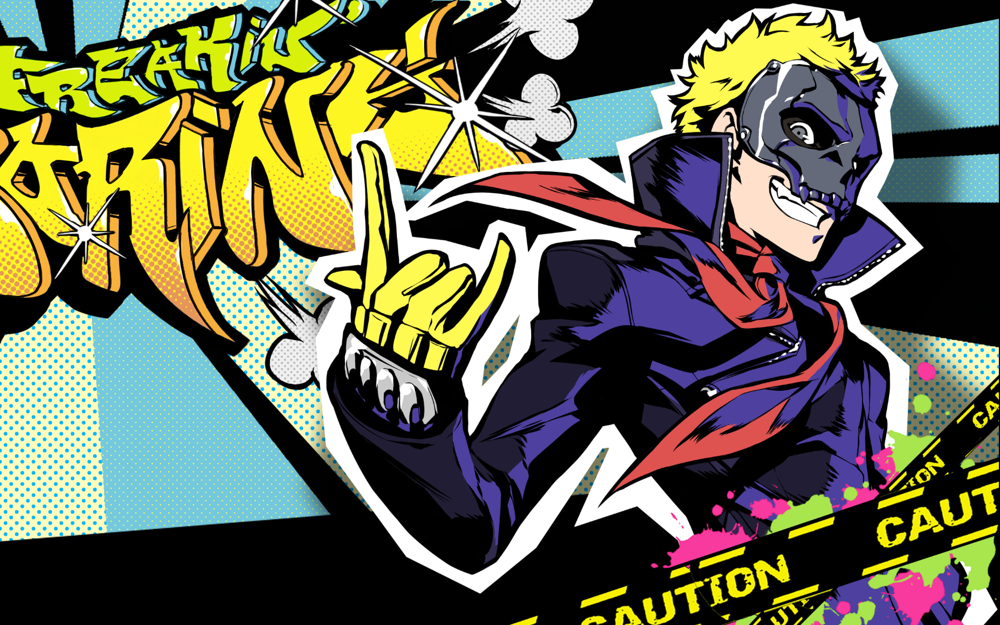
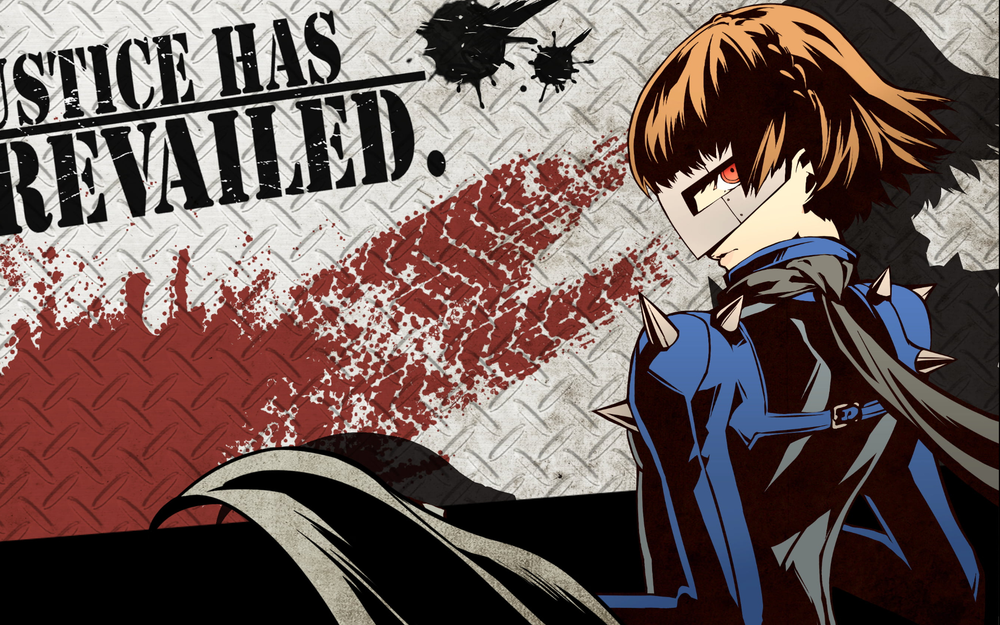

Confidant adalah fitur dalam Persona 5 Royal yang memungkinkan pemain untuk membangun hubungan dengan berbagai karakter dalam permainan.
Dibawah ini terdapat beberapa contoh karakter yang bisa pemain dekati untuk membangun hubungan dalam game Persona 5 Royal
- Sakamoto Ryuji
 - Makoto Niijima
